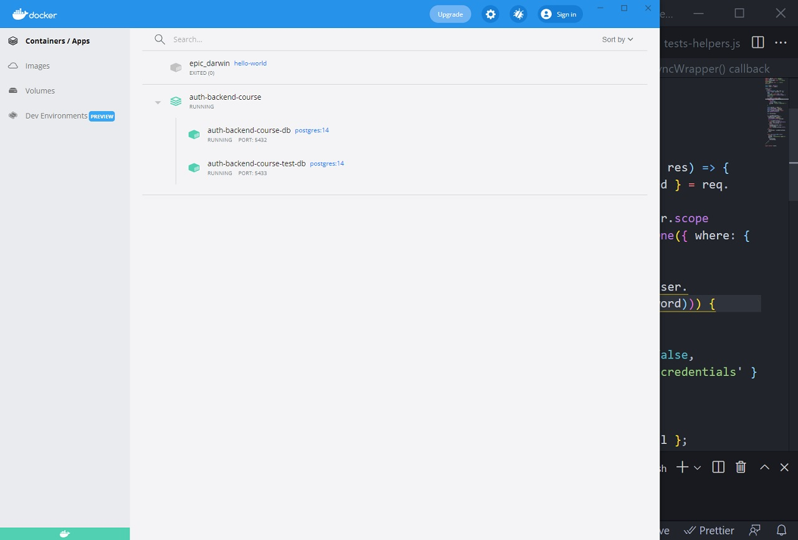

Auth Back End
Authentication backend with Express.js, Sequelize ORM, Postgres, Docker and testing it with Jest.
Link to the code ➡
Technologies and tools:
- - Express.js
- - JSON Web Token
- - Sequelize ORM
- - PostgreSQL
- - Docker and Docker Compose
- - Jest
- - Bcrypt
- - Babel
- - Postman
- - DBeaver
Testing with Jest
Acknowledgments:
- Tips used from: David Armendáriz, Sequelize Docs, Mosh Hamedani, Coding With Chaim, Stack Overflow, Medium.